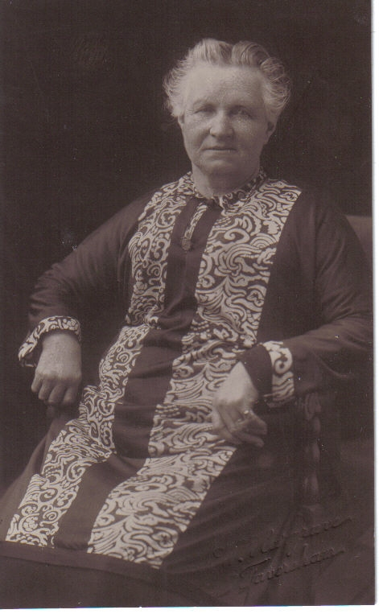
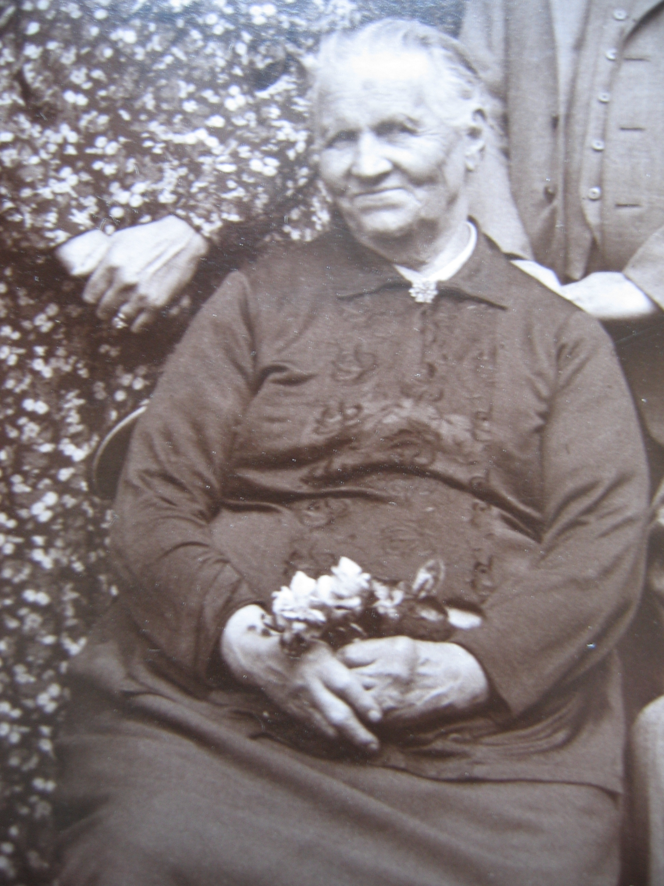
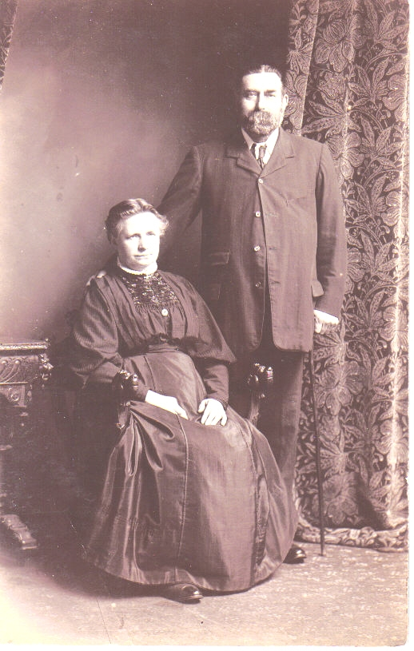
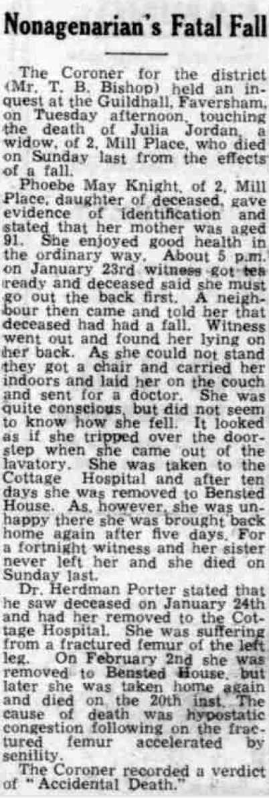

Julia Jordan (née Culmer) 1852 - 1944
[ Home ] | [ Calendar ] | [ Surnames Index ] | [ Census Index ] | [ Family History ]The child of George Culmer (an agricultural laborer) and Harriet Marten, Julia Culmer, the first cousin three-times-removed on the mother's side of Nigel Horne, was born in Canterbury, Kent, England on Apr 17, 18521,2, was baptized there at St Andrew's Church on May 23, 1852 and married James Jordan (a horse keeper with whom she had 10 children: Sarah Elizabeth, Louisa, Frederick John Thomas, Alice Ann Harriet, Rosamond Julia, Edith Emma Nellie, James George Charles, Phoebe May, Christopher Gerald and Kathleen Mary, along with 3 surviving children) at St Mary Of Charity Church, Church Road, Faversham, Kent, England on Apr 1, 18764.
During her life, she was living at St Thomas Hill in Canterbury on Apr 7, 18615; and at 2 Mill Place in Faversham on Apr 3, 18817, on Apr 5, 18916, on Mar 31, 19018, on Apr 2, 19119 and on Sep 29, 19391 which is where she died on Feb 20, 19443 (hypostatic congestion following a fall at home) (hypostatic congestion following a fall at home).
Parents
- George was born c. 1824
- Harriet was born c. 1826
Children
- Louisa was born on Jul 30, 1876
- Frederick John Thomas was born on Apr 30, 1880
- Alice Ann Harriet was born on Nov 25, 1881
- Rosamond Julia was born on Nov 19, 1883
- Edith Emma Nellie was born c. Nov 1885
- Phoebe May was born on Apr 23, 1889
- Christopher Gerald was born on Feb 18, 1891
Citations
- 1939 Register - Findmypast (was recorded at this address)
- England & Wales births 1837-2006 - Findmypast
- England & Wales deaths 1837-2007 - Findmypast
- Kent, Canterbury Archdeaconry Marriages - Findmypast
- 1861 England, Wales & Scotland Census - Findmypast (was age 9 and the daughter of the head of the household)
- 1891 England, Wales & Scotland Census - Findmypast (was age 38 and the wife of the head of the household)
- 1881 England, Wales & Scotland Census - Findmypast (was age 28 and the wife of the head of the household)
- 1901 England, Wales & Scotland Census - Findmypast (was age 48 and the wife of the head of the household)
- 1911 Census for England & Wales - Findmypast (was age 58 and the wife of the head of the household)
Media
Julia Culmer - 1

Julia Culmer - 2

1861 UK Census

1891 UK Census

1881 UK Census

1901 UK Census

1911 UK Census - page 2

James Jordan and Julia Culmer

Whitstable Times and Herne Bay Herald 26 Feb 1944

England & Wales births 1837-2006 - BMD/B/1852/2/AH/000875/020
1939 Register Transcription - TNA-R39-1715-1715J-013-20
England & Wales deaths 1837-2007 - BMD/D/1944/1/AZ/000603/098
England Marriages 1538-1973 - R_848611217/2
Kent, Canterbury Archdeaconry Marriages Transcription - GBPRS-CANT-M-97028366-2
England Marriages 1538-1973 - R_854023152/2
1861 England, Wales & Scotland Census Transcription - GBC-1861-0003450767
1881 England, Wales & Scotland Census Transcription - GBC-1881-0004769062
1891 England, Wales & Scotland Census Transcription - GBC-1891-0005793046
England & Wales marriages 1837-2005 - BMD/M/1876/2/AZ/000066/135
Kent Baptisms - GBPRS/CANT/B/96698417
England Births & Baptisms 1538-1975 - R_884059778
England Births & Baptisms 1538-1975 - R_937841777
Family Tree

Generated by ged2site. Last updated on Jun 11, 2024